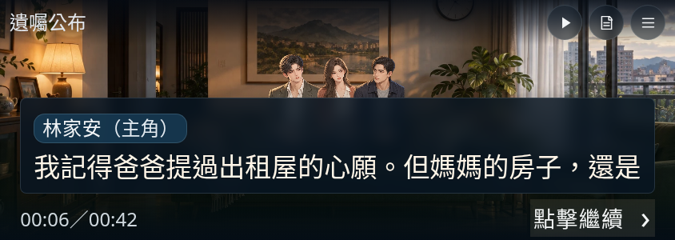
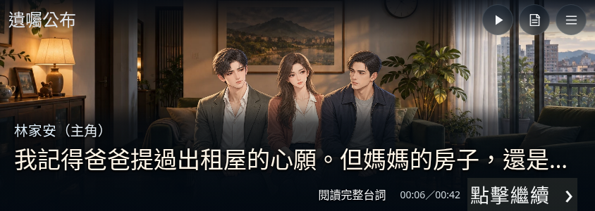

以下是 Chromium 手機尺寸實際畫面：844×300、150%字級、原有長台詞。300px 可用高度用於模擬瀏覽器工具列佔用空間；不是實體 iPhone 截圖，也沒有偽造 Safari 工具列。


底部漸層取代深藍實心框；短高度採單行，其他橫向最多兩行。被收合的長台詞可點「閱讀完整台詞」，演出暫停並顯示完整原文，關閉後由玩家繼續。
12種高度與字級組合（844×260／300／320／390，100%／125%／150%），84段台詞通過；完整台詞、旋轉保留選擇、單次確認通過。12項場景及構圖單元測試通過。沒有更改人物素材、場景台詞、法律、正式經營模式或存檔。
實體 iPhone／Safari 工具列展開與收合、瀏海安全區仍需人工驗收。極短高度仍受大字與人物空間限制，長台詞需展開閱讀；不宣稱已完全呈現手部動作。